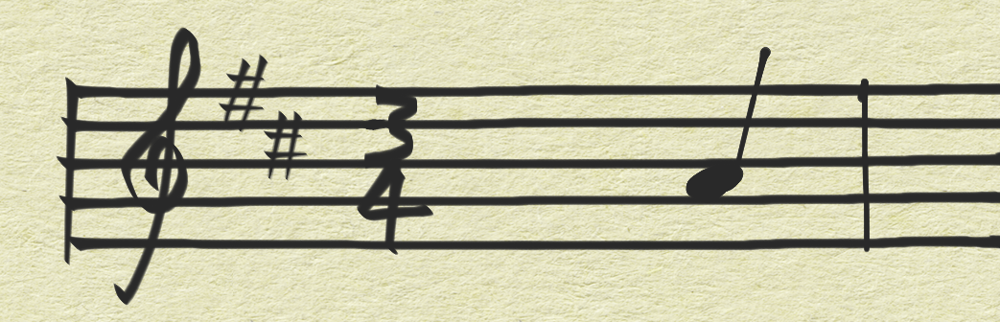
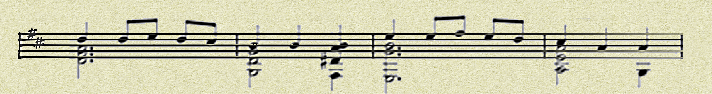
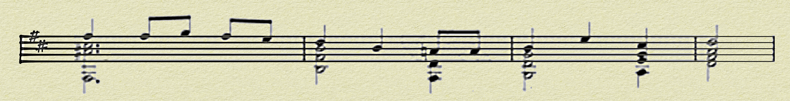
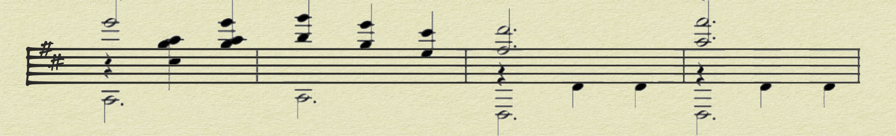
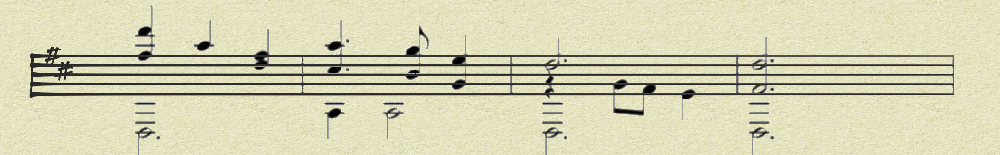
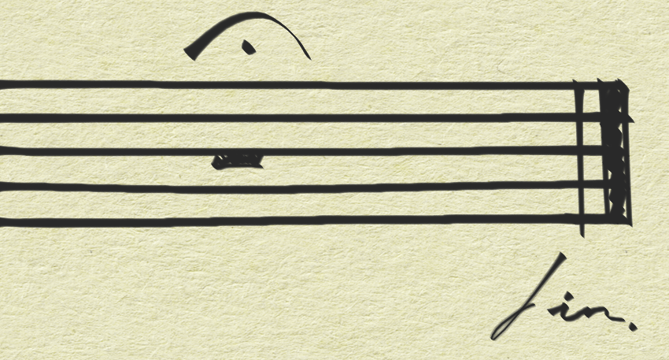

Note: I originally wrote this post for the Mango Solutions blog, and they have kindly allowed me to repost it here alongside the rest of my work. You can find the original post here!
Prelude
Maybe you’re looking for a change of scene. Maybe you’re looking for your first job. Maybe you’re stuck in conversation with a relative who you haven’t spoken to since last Christmas and who has astonishingly strong opinions on whether cells ought to be merged or not in Excel spreadsheets.
The fact of the matter is that you have just encountered the term “data science” for the first time, and it sounds like it might be interesting but you don’t have a clue what it is. Something to do with computers? Should you bring a lab coat, or a VR headset? Or both? What is a data and how does one science it?
Fear not. I am here to offer subjective, questionable and most importantly FREE advice from the perspective of someone who was in that very position not such a long time ago. Read on at your peril.

I. Adagio: Hear about data science
This is the hard bit. It’s surprisingly difficult to stumble upon data science unless someone tells you about it.
But the good news is that you’re reading this, so you’ve already done it. Possibly a while ago, or possibly just now; either way, put a big tick next to Step 1. Congratulations!
(By the way, you’ll remember the person who told you about data science. When you grow in confidence yourself, be someone else’s “person who told me about data science”. It’s a great thing to share. But all in good time…)

II. Andante: Find out more
But what actually is data science?
To be honest, it’s a fairly loosely-defined term. There are plenty of articles out there that try to give an overview, but most descend into extended discussions about the existence of unicorns or resort to arranging countless combinations of potentially relevant acronyms in hideous indecipherable Venn diagrams.
You’re much better off finding examples of people “doing” data science. Find some blogs (here are a few awesome ones to get you started) and read about what people are up to in the real world.
Don’t be afraid to narrow down and focus on a specific topic that interests you - there’s so much variety out there that you’re bound to find something that inspires you to keep reading and learning. But equally, explore as many new areas as you can, because the more context you can get about the sector the better your understanding will be and you’ll start to see how different subjects and different roles relate to each other.
Believe it or not, one of the best tools for keeping up to date with the latest developments in the field is Twitter. If you follow all your blog-writing heroes, not only will you be informed whenever they publish a new article but you’ll also get an invaluable glimpse into their day-to-day jobs and working habits, as well as all the cool industry-related stuff they share. Even if you never tweet anything yourself you’ll be exposed to much more than you’d be able to find on your own. If you want to get involved there’s no need to be original - you could just use it to share content you’ve found interesting yourself.
If you’re super keen, you might even want to get yourself some data science books tackling a particular topic. Keep an eye out for free online/ebook versions too!

III. Allegretto: Get hands-on
Observing is great, but it will only get you so far.
Imagine that you’ve just heard about an amazing new thing called “piano”. It sounds great. No, it sounds INCREDIBLE. It’s the sort of thing you really want to be good at.
So you get online and read more about it. Descriptions, analyses, painstaking breakdowns of manual anatomy and contrapuntal textures. You watch videos of people playing pianos, talking about pianos, setting pianos on fire and hurling them across dark fields. You download reams of free sheet music and maybe even buy a book of pieces you really want to learn.
But at some point… you need to play a piano.
The good news is that with data science, you don’t need to buy a piano, or find somewhere to keep it, or worry about bothering your family/friends/neighbours/pets with your late-night composing sessions.
Online interactive coding tutorials are a great place to start if you want to learn a new programming language. Sites like DataCamp and Codecademy offer a number of free courses to get yourself started with data science languages like R and Python. If you are feeling brave enough, take the plunge and run things on your own machine! (I’d strongly recommend using R with RStudio and using Anaconda for Python.) Language-specific “native-format” resources such as SWIRL for R or this set of Jupyter notebooks for Python are a great way to learn more advanced skills. Take advantage of the exercises in any books you have - don’t just skip them all!
Data science is more than just coding though - it’s all about taking a problem, understanding it, solving it and then communicating those ideas to other people. So Part 1 of my Number One Two-Part Top Tip for you today is:
1. Pick a project and write about it
How does one “pick a project”? Well, find something that interests you. For me it was neural networks (and later, car parks…) but it could be literally anything, so long as you’re going to be able to find some data to work with. Maybe have a look at some of the competitions hosted on Kaggle or see if there’s a group in your area which publishes open data.
Then once you’ve picked something, go for it! Try out that cool package you saw someone else using. Figure out why there are so many missing values in that dataset. Take risks, explore, try new things and push yourself out of your comfort zone. And don’t be afraid to take inspiration from something that someone else has already done: regardless of whether you follow the same process or reach the same outcome, your take on it is going to be different to theirs.
By writing about that project - which is often easier than deciding on one in the first place - you’re developing your skills as a communicator by presenting your work in a coherent manner, rather than as a patchwork of dodgy scripts interspersed with the occasional hasty comment. And even if you don’t want to make your writing public, you’ll be amazed how often you go back and read something you wrote before because it’s come up again in something else you’re working on and you’ve forgotten how to do it.
I’d really encourage you to get your work out there though. Which brings us smoothly to…

IV. Allegro maestoso: Get yourself out there
If you never play the piano for anyone else, no-one’s ever going to find out how good you are! So Part 2 of my Number One Two-Part Top Tip is:
2. Start a blog
It’s pretty easy to get going with Wordpress or similar, and it takes your writing to the next level because now you’re writing for an audience. It may not be a very big audience, but if someone, somewhere finds your writing interesting or useful then surely it’s worth it. And if you know you’re potentially writing for someone other than yourself then you need to explain everything properly, which means you need to understand everything properly. I often learn more when I’m writing up a project than when I’m playing around with the code in the first place.
Also, a blog is a really good thing to have on your CV and to talk about at interviews, because it gives you some physical (well, virtual) evidence which you can point at as you say “look at this thing wot I’ve done”.
(Don’t actually say those exact words. Remember that you’re a Good Communicator.)
If you’re feeling brave you can even put that Twitter account to good use and start shouting about all the amazing things you’re doing. You’ll build up a loyal following amazingly quickly. Yes, half of them will probably be bots, but half of them will be real people who enjoy reading your work and who can give you valuable feedback.
Speaking of real people…
3. Get involved in the community
Yes, that was indeed Part 3 of my Number One Two-Part Top Tip, but it’s so important that it needs to be in there.
The online data science community is one of the best out there. The R community in particular is super friendly and supportive (check out forums like RStudio Community, community groups like R4DS, and the #rstats tag on Twitter). Get involved in conversations, learn from people already working in the sector, share your own knowledge and make friends.
Want to go one better than online?
Get a Meetup account, sign up to some local groups and go out to some events. It might be difficult to force yourself to go for the first time, but pluck up the courage and do it. Believe me when I say there’s no substitute for meeting up and chatting to people. Many good friends are people I met for the first time at meetups. And of course, it’s the perfect opportunity to network - I met 5 or 6 of my current colleagues through BathML before I even knew about Mango!
(If you’re in or near Bristol or London, Bristol Data Scientists and LondonR are both hosted by Mango and new members are always welcome!)

Postlude
Of course, everything I’ve just said is coming from my point of view and is entirely based on my own experiences.
For example, I’ve talked about coding quite a lot because I personally code quite a lot; and I code quite a lot because I enjoy it. That might not be the case for you. That’s fine. In fact it’s more than “fine”; the huge diversity in people’s backgrounds and interests is what makes data science such a fantastic field to be working in right now.
Maybe you’re interested in data visualisation. Maybe you’re into webscraping. Or stats. Or fintech, or NLP, or AI, or BI, or CI. Maybe you are the relative at Christmas dinner who won’t stop banging on about why you should NEVER, under ANY circumstances, merge cells in an Excel spreadsheet (UNLESS it is PURELY for purposes of presentation).
Oh, why not:
4. Find the parts of data science that you enjoy and arrange them so that they work for you.
